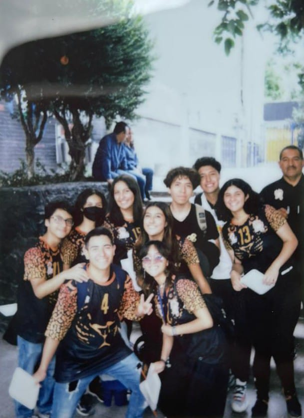
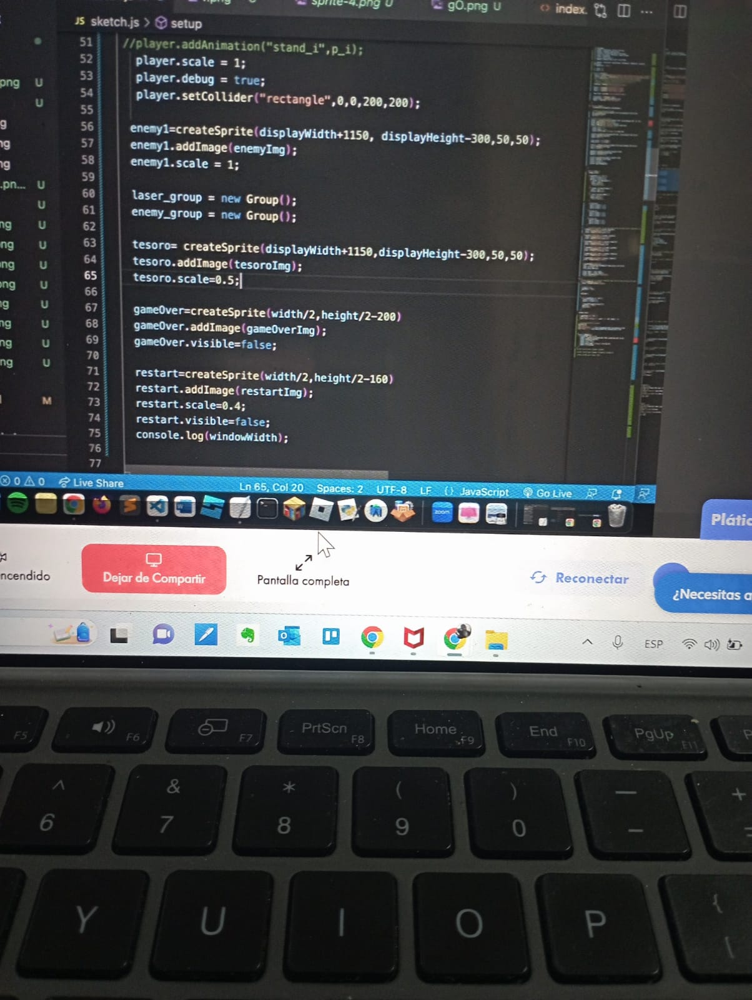

Mi nombre es Erik Cruz Villar tengo 18 años y vivo en la ciudad de México, he creado este sitio web para hablarles acerca de mi vida.
Mi Historia
Desde que era un niño comencé a ser independiente, estudiaba, hacia mis tareas, y entrenaba deportes sin la necesidad de que mis padres
tuvieran que decirme algo. Tuve una infancia tranquila, aún que bien como todo niño pase por etapas que le dieron giros de 180º a mi vida y
por ello tome ciertas actitudes las cuáles marcaron mi vida. A decir verdad no fui como la mayoria de los niños, yo no salía a jugar con
las demás personas, no salí a jugar con la bicicleta, ni siquiera salía a jugar con un balón, y no fue por el hecho de que no me dieran
permiso, de hecho era porque a mí no me gustaba, prefería pasar el tiempo leyendo un libro, entrenando natación o haciendo actividades de
mayor provecho, claro que en ocasiones si salía a jugar con las demás personas pero realmente era muy rara la vez que lo hacía.
Siempre fui una persona responsable, entrene natación desde que nací y a los 6 años comencé a participar en
competencias en donde en la mayoría gane los primeros lugares. A los 10 años mis padres me metieron a un equipo de fútbol
en donde nunca destaque ya que no soy bueno debido a que tengo 2 pies izquierdos. A los 12 años quise entrenar kick Boxing, pero deje
de hacerlo ya que me lesioné así que no pude seguir entrenando, después de eso me enfoque nuevamente en la natación la cuál nunca deje
de hacer, cuando cumplí 15 años deje de hacer ejercicio por culpa de la pandemia.
Ese mismo año tuve que realizar mi examen de
admisión para la preparatoria así que me prepare demasiado y gracias a mi esfuerzo logre entrar a la UNAM en donde actualmente estoy
concluyendo mi último año de preparatoria.
En estos momentos sigo estudiando la preparatoria, y puedo decir que ha sido una de las mejores etapas de mi vida aún que no puede
tenerla completa gracias a la pandemia, el poco tiempo que he estado en la prepa de forma presencial fue lo mejor, las personas que
conocí, los amigos que hice, y sin duda alguna las experiencias vividas fueron de las mejores, gracias a este año en la prepa pude
conocer más a fondo un deporte el cual me llamo mucho la atención, comenzar a entrenar Voleibol fue lo mejor que me pudo pasar, y
aún que solo llevo 7 meses entrenando este deporte me he vuelto muy bueno, tan así que logré clasificar para el equipo representativo
de la UNAM, amo este deporte y gracias a el logre tener una disciplina, el saber que si amas tanto algo debes comprometerte en ello,
ya sea en un deporte o en cualquier cosa que hagas debes de tener un compromiso ya que de lo contrario nunca lograrás salir adelante, yo
lo hice y sin duda alguna fue lo mejor, 7 meses en donde no tuve ningún descanso para lograr ser un gran jugador, y realmente valieron la pena, el
compromiso y la constancia te llevan al éxito.

MI EQUIPO DE VOLEIBOL
EN UN FUTURO...
Para hablarles de mi futuro primero tendría que darles un poco del contexto, hace un año se me presentó la oportunidad de comenzar un
curso acerca de la programación, aún que bien yo no quería hacerlo porque tenía mucha presión con la escuela y mis entrenamientos,
mis padres me alentaron a tomar los cursos así que acepte, comence a tomar cursos de programación en una escuela llamada BYJU'S, y todo
esto se dio gracias a lo oportunidad que nos dieron por parte de la empresa de Play Telecom ya que ellos fueron los que nos otorgaron
una beca para estudiar estos cursos. Hoy les agradezco todo lo que hicieron, ya que gracias a ellos puede definir un futuro para mí, logre
descubrir lo que me gusta y lo que quiero para mí en un futuro, hoy estoy seguro de que quiero estudiar una licenciatura en Informática y
así seguir descubriendo mucho más acerca de toda la tecnología que día a día se va creando.
En verdad agradezco la gran oportunidad que Play Telecom nos dio, y también agradezco a mi familia por todo el apoyo que siempre me ha dado,
sin ella no lograría ser ni la mitad de lo que hoy soy.

MIS PRIMEROS PROYECTOS
PARA SABER MÁS ACERCA DE MI, VALLA AL MENU Y VISITE MI PÁGINA "HOBBIES", O SI QUERE VER MIS PROYECTOS VISITE LA PÁGINA "PROYECTOS".